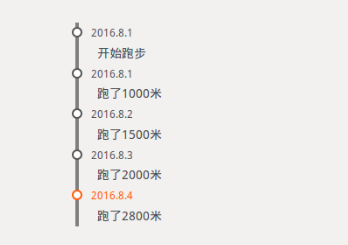

过去所发生的虽已过去，往回追溯，脑海中留下的东西其实并不多。因为人会遗忘，如果能够记录下来，那结果肯定就不一样了。时间轴，它就像一个人的生命线。通过使用时间轴记录过去生活中发生的故事，你就能够回到从前了。
下面就来实现你的时间轴，开始记录属于你的生活故事吧。
使用纯css制作，主要就是用ul标签和li标签来实现，下面看看实现的效果图
 查看演示 下载源码下面是源代码：
*{margin:0;
padding:0;}
ul{list-style:none;}
ul{margin:100px;border-left:4px solid gray;}
li{margin-left:6px;}
span{padding-left:5px;font-size:12px;line-height:20px;color:#555;}
li:hover span {color:#ff6600;}
li:hover b {border:2px solid #ff6600;}
p{padding-left:15px;font-size:14px;line-height:25px;}
b{width:8px;height:8px;background:#fff;
border:2px solid #555;margin:5px;border-radius:6px;
-webkit-border-radius:6px;-moz-border-radius:6px;
display:inline-block;margin-left:-14px;float:left;}